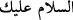
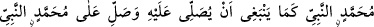

âdâbındandır. Nitekim “__WORD__ (Selam sana)” diye hitab edilmesi de bunu gerektirir.
Eğer Rasûlullah (s.a.)’i yanında hazır ve salâtını işitir halde göremiyorsa, en azından
O’nun (a.s.) kendisini gördüğünü, salâtının O’na arz edildiğini bilmelidir. Yoksa
salevâtı, sedece dilin hareketinden ve sesini yükseltmekten ibâret olur.
Bilesin ki Şeyh Sa‘deddîn Muhammed Hamevî (k.s.)’tan nakledildiğine göre dört
bin, başka bir rivâyete göre ise on iki bin çeşit salevât vardır. Onlardan her biri doğu ve
batı ehlinden bir topluluğun kendileriyle Hz. Peygamber (a.s.) arasında buldukları
münasebet bağına göre seçilip tercih edilmiştir. Onlar tercih ettikleri o salâtta nice
özellikler ve faydalar idrak etmişlerdir.
Bu salevât çeşitlerinden bazıları şunlardır:
Bu âyetin başında geçen “__WORD__ (Allâh’ım Muhammed’e ve
Muhammed’in âilesine salât ve selam eyle.)” salâtıdır.
Riyâzu’l-ehâdîs’te şöyle nakledilir ki Hz. Peygamber (a.s.) şöyle buyurmuştur:
“Cennette “mahbûbe” adında bir ağaç vardır. Meyvesi nardan daha küçük, elmadan
daha büyüktür. Meyvesi sütten daha beyaz, baldan daha tatlı, yağdan daha
yumuşaktır. Bu meyveden her gün “__WORD__” salâtını
söylemeye devam eden dışında kimse yiyemez.”
“(Allâh’ım Muhammed Nebî’ye bize O’na salât etmemizi emrettiğin gibi salât eyle.
Yine Muhammed Nebî’ye O’na nasıl salât etmek gerekiyorsa öyle salât eyle. Yine
Muhammed Nebî’ye O’na salât edenlerin sayısınca salât eyle. Yine Muhammed
Nebî’ye O’na salât etmeyenlerin sayısınca salât eyle. Yine Muhammed Nebî’ye nasıl
salât edilmesini seviyorsan öyle salât eyle.)”
İşte kim bu salevâtı söylerse ümmetin fertlerinden hiç kimseden yükselmeyen makbul
amel bu kimseden yükselir. Bu kimse mutlak olarak korktuklarından emin olur. Özellikle
yol kesicilerin ve eşkıyânın bulunduğundan korkulan bir yolda ise.
Zamanın korkularından, devrânın âfetlerine karşı
O’nun adı sağlam bir sığınak, zikri emin bir yurttur.